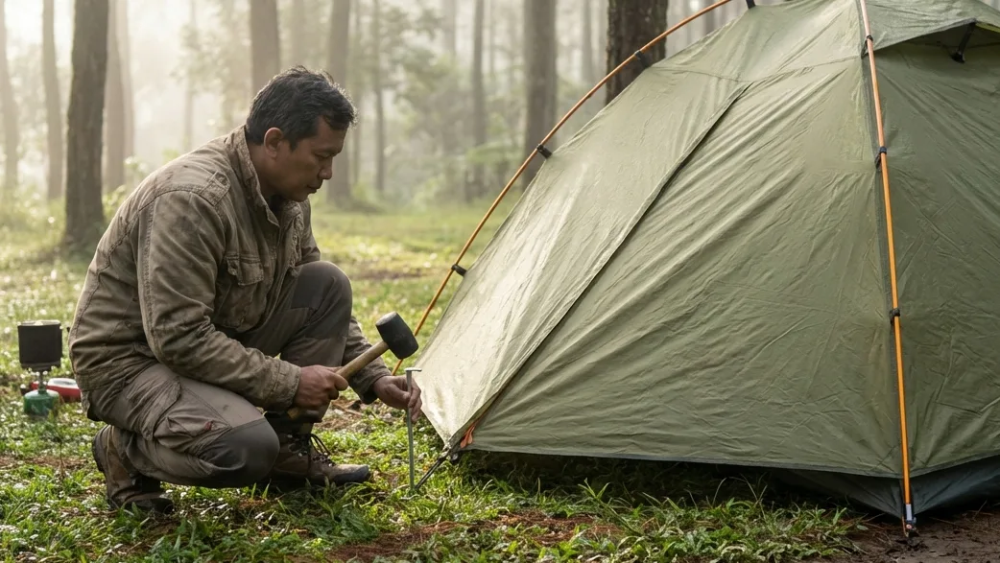

1. Tenda: Garis Pertahanan Terakhir di Alam Bebas
Ketika Anda memutuskan untuk menanggalkan kenyamanan kasur rumah dan melangkah masuk ke dalam hutan pegunungan, Anda secara sadar telah menyerahkan nasib keselamatan fisik Anda pada peralatan yang Anda bawa. Di antara seluruh barisan peralatan survival tersebut, tenda menduduki kasta tertinggi. Tenda bukanlah sekadar tempat untuk merebahkan punggung; ia adalah benteng pertahanan utama (shelter) yang memisahkan tubuh rapuh Anda dari amukan cuaca ekstrem, serangan hipotermia, hembusan angin lembah, hingga guyuran badai air yang membekukan.
Banyak wisatawan pemula yang menganggap remeh proses mendirikan tenda. Mereka berpikir bahwa merakit tenda dome hanyalah perkara menyambungkan tiang dan menutupinya dengan kain. Kenyataannya, ketidaktahuan terhadap fungsi mekanis setiap alat seringkali berujung pada tenda yang bocor total, kain yang sobek, atau kerangka yang ambruk rata dengan tanah saat ditiup angin. Lewat panduan komprehensif bertajuk Mengenal Berbagai Alat Tenda Camping: Kunci Membangun Tempat Berlindung yang Aman di Alam Bebas ini, kita akan membedah secara teknis anatomi sebuah tenda. Anda akan memahami mengapa sebatang pasak besi kecil bisa menyelamatkan nyawa Anda, fungsi krusial dari tali pancang (guy lines), serta kesalahan-kesalahan fatal yang wajib Anda hindari saat merakit rumah sementara Anda di alam liar.
2. Anatomi Kain Tenda (Fabric System)
Sebuah tenda dome gunung yang standar (wajib berjenis Double Layer) terdiri dari beberapa lapisan kain yang masing-masing memiliki tugas sangat spesifik.
Inner Tent (Bagian Dalam yang Bernapas)
Inner tent adalah ruang utama tempat Anda menghabiskan malam. Material pada lapisan ini biasanya menggunakan kain polyester tipis yang dikombinasikan dengan panel jaring (mesh) yang cukup lebar di bagian atap atau pintunya. Fungsi utama inner BUKANLAH untuk menahan air hujan, melainkan untuk memberikan privasi dan memastikan sirkulasi oksigen berputar lancar (breathable). Jaring ini bertugas membuang uap panas dari napas tubuh Anda ke luar agar tidak terperangkap menjadi embun di dalam ruangan.
Flysheet (Mantel Luar Penahan Badai)
Inilah perisai sesungguhnya. Flysheet (atau *outer tent*) terbuat dari material nilon atau polyester yang telah dilapisi (coating) bahan Waterproof Polyurethane (PU). Flysheet akan membungkus inner tent secara menyeluruh dari atas hingga nyaris menyentuh tanah. Ia memiliki tugas ganda: memblokir 100% guyuran air hujan agar tidak masuk ke dalam, serta menangkap uap napas Anda dari dalam (kondensasi) lalu mengalirkannya turun ke tanah tanpa menetes kembali ke wajah Anda.
Footprint (Alas Ekstra Pelindung Lantai)
Meski lantai tenda (floor) sudah terbuat dari bahan terpal yang anti-air, Anda sangat disarankan menggunakan alat ekstra bernama Footprint. Ini adalah selembar kain terpal/parasut yang digelar tepat sebelum Anda mendirikan tenda di atasnya. Footprint bertugas menerima tusukan ranting, kerikil tajam, dan rembesan lumpur secara langsung, sehingga lantai asli tenda Anda akan jauh lebih awet dan tidak mudah robek atau bocor.
BACA JUGA (Logistik Alam Bebas):
3. Struktur Rangka Tenda (Framing System)
Kain yang kuat tidak akan berarti apa-apa jika tulang penyangganya patah saat menahan beban angin.
Frame Fiberglass vs Aluminium Alloy
Tiang rangka (frame / poles) adalah tulang punggung yang menciptakan bentuk aerodinamis khas tenda dome. Tiang ini dirangkai menyilang untuk memberikan daya dorong ke atas. Di pasaran, ada dua jenis material: Fiberglass (berwarna hitam/putih, cukup berat, harganya ekonomis, namun rawan pecah memanjang jika ditekan terlalu keras) dan Aluminium Alloy (sangat ringan, harga cukup mahal, luar biasa lentur, dan jika rusak biasanya hanya bengkok tidak pecah). Untuk keamanan ekstra di cuaca badai, frame alloy adalah raja.
4. Sistem Pengunci Tanah (Anchoring System)
Ini adalah komponen yang paling sering diremehkan oleh pemula, padahal fungsinya setara dengan sabuk pengaman di mobil Anda.
Pasak (Pegs / Stakes): Jangkar Penahan Badai
Pasak adalah batangan logam kecil (aluminium atau besi galvanis) dengan ujung runcing dan bagian atas melengkung seperti kail. Fungsinya memaku seluruh sudut inner tenda dan flysheet ke bumi. Tanpa pasak, tenda dome Anda (yang sangat ringan) akan mudah tergeser atau bahkan terbang terbawa angin badai layaknya kantong kresek kosong. Pasak harus ditancapkan menembus lubang sudut tenda dengan sudut kemiringan 45 derajat berlawanan arah dengan daya tarik tenda.
Tali Pancang (Guy Lines) dan Guyline Tensioner
Guy lines adalah tali pengikat yang menempel pada dinding luar flysheet. Fungsinya bukan pajangan! Tali ini harus ditarik kuat dan dikunci ke tanah menggunakan pasak tambahan. Gunanya untuk memecah dan mendistribusikan tekanan dorongan angin agar tidak hanya berpusat menghantam tiang frame. Alat plastik kecil pada tali tersebut disebut tensioner, berfungsi untuk memendekkan atau mengencangkan tarikan tali dengan mudah tanpa perlu membuat simpul mati yang sulit dilepas.

Menarik tali pancang dengan kencang berfungsi menjaga kain luar (flysheet) tidak menempel pada kain dalam, mencegah bocornya air hujan dan memperkokoh struktur tenda menahan angin. (Ilustrasi: Unsplash)5. Alat Bantu Ekstra untuk Mendirikan Tenda
Untuk mempermudah proses merakit hunian Anda di alam bebas, tambahkan dua barang murah ini ke dalam ransel.
Palu Karet (Rubber Mallet)
Menekan pasak besi menggunakan tumit sepatu seringkali sulit jika tanah di lokasi terlalu keras atau berbatu. Jangan menggunakan batu sembarangan karena bisa membengkokkan pasak aluminium. Bawalah palu karet mini khusus camping untuk memukul pasak dengan aman dan cepat.
Tali Prusik Tambahan
Prusik adalah tali panjat berdiameter kecil (biasanya 2mm-4mm) yang sangat kuat. Membawa beberapa meter tali prusik cadangan sangat berguna jika sewaktu-waktu tali guy lines tenda Anda putus, atau bisa Anda fungsikan sebagai jemuran darurat (clothesline) untuk menggantung jaket basah di dalam vestibule (teras) tenda.
6. Kesalahan Fatal Saat Mendirikan Tenda Dome
Mengerti alat saja tidak cukup; Anda harus mempraktikkannya dengan disiplin tinggi agar selamat dari hipotermia.
Malas Menancapkan Semua Pasak dan Tali
Hanya karena saat sore cuaca terlihat cerah, banyak pemula yang "malas" memaku tali pancang dan hanya menancapkan 4 sudut pasak dasar saja. Ini adalah berjudi dengan nyawa. Di gunung, angin kencang (badai) bisa datang tiba-tiba pada pukul 2 dini hari. Jika struktur guy lines tidak terpasang, kerangka fiberglass akan melengkung parah lalu patah menjadi dua bagian.
Kain Flysheet Menempel pada Inner Tenda
Inilah hukum paling mutlak dalam mendirikan tenda Double Layer. Kain mantel luar (flysheet) harus ditarik kencang dengan tali pancang sehingga terdapat jarak renggang (rongga) antara flysheet dan jaring inner tent. Jika Anda menariknya dengan kendur, kedua kain tersebut akan menempel bersentuhan. Titik sentuh inilah yang akan merusak daya waterproof, menyebabkan air hujan atau uap embun dari luar seketika merembes masuk membasahi sleeping bag Anda.
BACA JUGA (Opsi Kemah Nyaman):
7. Solusi Praktis: Menyewa Tenda Dome yang Sudah Berdiri
Jika membaca ratusan aturan mekanis di atas membuat nyali liburan Anda menciut, ada jalan pintas yang sangat direkomendasikan bagi kaum urban atau pemula.
Sektor wisata luar ruang saat ini telah menyajikan opsi Comfort Camping. Jika Anda mengunjungi kawasan Batu Sunrise Camp, Anda tidak perlu dipusingkan dengan urusan menancapkan pasak atau menarik guy lines. Pengelola yang berpengalaman telah menyediakan fasilitas sewa tenda All-In. Tenda dome double layer anti badai telah didirikan (di-pitching) secara rapi, simetris, dan sangat kokoh sebelum rombongan Anda datang. Anda murni hanya perlu menikmati keseruan tidur di alam bebas tanpa perlu bermandikan keringat karena harus bertarung dengan kerangka tenda di tengah hembusan angin lembah.
8. Kesimpulan
Membangun rumah sementara di alam bebas bukanlah ajang untuk pamer estetika, melainkan sebuah uji ketelitian untuk menjamin keselamatan diri Anda. Lewat penjabaran teknis Mengenal Berbagai Alat Tenda Camping: Kunci Membangun Tempat Berlindung yang Aman di Alam Bebas ini, kita telah membongkar mitos bahwa tenda adalah alat yang sekadar "dibuka lalu dipakai". Memahami betapa vitalnya peran pasak untuk mengunci tanah, esensi tali guy lines untuk mendistribusikan beban angin, hingga hukum mutlak pemisahan jarak antara flysheet dan inner adalah literasi dasar yang wajib dimiliki setiap petualang sejati. Apabila beban logistik dan proses teknikal ini terasa memberatkan liburan akhir pekan Anda, manfaatkanlah secara cerdas penyedia jasa sewa tenda paket di destinasi asri seperti Batu Sunrise Camp. Dengan begitu, ego dan kenyamanan Anda tetap terjaga utuh sembari Anda menyerap secara rakus energi positif dari sejuknya alam pegunungan Kota Batu.